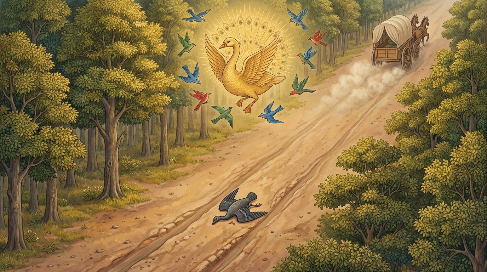

5. අනුශාසික ජාතකය (115)
“යායඤ්ඤමනුසාසති” (යම් කෙනෙක් අනුන්ට අනුශාසනා කෙරේ ද) යන මේ ජාතකය බුදුරජාණන් වහන්සේ ජේතවනාරාමයෙහි වැඩවසන සමයෙහි, අනුන්ට අනුශාසනා කිරීමට කැමති එක්තරා භික්ෂුණියක් අරබයා දේශනා කළ සේක. ඇය සැවැත් නුවර වැසි එක් කුල දියණියකි. පැවිදි වී උපසපන් වූ තැන් පටන් ශ්රමණ ධර්මයෙහි නොයෙදුණු ඇය, ආමිෂයට (ද්රව්ය ලාභයට) ගිජු වී, අන් මෙහෙණින් වහන්සේලා නොයන නගරයේ එක්තරා පෙදෙසක පිණ්ඩපාතයෙහි හැසිරෙයි. මිනිස්සු ද ඇයට ප්රණීත පිණ්ඩපාතය දෙති. රස තෘෂ්ණාවෙන් බැඳුණු ඇය, “ඉදින් මේ පෙදෙසෙහි අන් මෙහෙණින් වහන්සේලා ද පිඬු පිණිස හැසිරෙන්නේ නම්, මගේ ලාභය පිරිහෙන්නේය. යම් අයුරකින් මේ පෙදෙසට අන් අය නොඑන්නේ ද, එසේ මා විසින් කටයුතුය” යි සිතා ගත්තාය. ඉක්බිති ඇය මෙහෙණවරට ගොස්, “ආර්යාවනි, අසවල් ස්ථානයේ:
- සැඩ ඇතෙක් සිටී.
- සැඩ අශ්වයෙක් සිටී.
- සැඩ බැටළුවෙක් සිටී.
- සැඩ බල්ලෙක් සිටී.
ඒ ස්ථානය උවදුරු සහිතය, එහි පිඬු පිණිස නොයන්න” යි භික්ෂුණීන්ට අවවාද කරයි. ඇගේ වචනය අසා එක් භික්ෂුණියක්වත් ඒ දෙසට ගෙල හරවා බැලීමක්වත් නොකළෝය. ඒ අනුශාසිකා භික්ෂුණිය එක් දිනක් ඒ පෙදෙසෙහි පිඬු පිණිස හැසිරෙන්නී, වේගයෙන් එක් ගෙයකට පිවිසෙන කල්හි සැඩ බැටළුවෙක් පහර දී ඇගේ කලවා ඇටය බින්දේය. මිනිස්සු වහා දිව අවුත්, දෙකට කැඩුණු කලවා ඇටය එකට තබා බැඳ, ඇය ඇඳක තබාගෙන මෙහෙණවරට ගෙන ගියහ. සෙසු භික්ෂුණීහු, “මැය අන් අයට අවවාද කොට තමා ම එම පෙදෙසෙහි හැසිර කලවා ඇටය බිඳගත්තාය” යි සිනාසෙමින් අපවාද කළහ. අනුශාසිකා භික්ෂුණිය කළ මේ ක්රියාව නොබෝ කලකින් භික්ෂු සංඝයා අතර ප්රකට විය.
දිනක් ධර්ම සභාවෙහි රැස් වූ භික්ෂූන් වහන්සේලා, “ඇවැත්නි, අනුශාසිකා භික්ෂුණිය අන් අයට අවවාද කොට, තමා ම එම පෙදෙසේ හැසිර සැඩ බැටළුවෙකුගෙන් පහර කා කලවා ඇටය බිඳගත්තාය” යි ඇගේ අගුණ කථාව කීවාහුය. බුදුරජාණන් වහන්සේ පැමිණ, “මහණෙනි, දැන් කවර කථාවකින් යුතුව සිටියහු ද?” යි විමසා, “මේ කථාවෙන් යුතුව සිටියෙමු” යි කී කල්හි, “මහණෙනි, මේ මෙහෙණ අන් අයට අනුශාසනා කළේ දැන් පමණක් නොවේ, පෙරත් එසේ ම කළාය. (එහෙත්) තමා ඒ අවවාදයෙහි නොපිහිටයි, එනිසා නිතර දුකම අනුභව කරයි” යි වදාරා මේ අතීත කථාව ගෙනහැර දැක්වූ සේක.
පෙර බරණැස් නුවර බ්රහ්මදත්ත රජු රාජ්යය කරන කල්හි බෝසතාණන් වහන්සේ වනයක කුරුලු යෝනියෙහි ඉපිද, වැඩිවියට පත්ව කුරුලු නායකයෙක් වී නොයෙක් දහස් ගණන් කුරුල්ලන් පිරිවරා හිමවතට පිවිසියහ. එහි වසන කල්හි එක්තරා චණ්ඩ (සැඩ) කිරිල්ලක් මහ මාවතට ගොස් ගොදුරු කන්නීය. ඈ එහි ගැල්වලින් වැටුණු වී, මුං ආදී බීජ ලැබ, “දැන් යම් සේ මේ පෙදෙසට අන් කුරුල්ලෝ නොපැමිණෙත් ද, එසේ කළ යුතුය” යි සිතා, කුරුලු සමූහයාට මෙසේ අවවාද දෙයි. “වත්තනි මහා මාර්ගය වනාහි බිය ජනකය. එහි ඇතුන් අශ්වයන් ආදීන් ද, සැඩ ගොනුන් යෙදූ රථ ආදිය ද නිතර ගැවසෙයි. හදිසියේ අහසට නැඟීමට ද නොහැකි වේ. එනිසා එහි නොයා යුතුය.” කුරුලු සමූහයා ඇයට “අනුශාසිකා” යැයි නමක් තැබූහ.
දිනක් ඇය ඒ මහ මාවතෙහි හැසිරෙන්නී, ඉතා වේගයෙන් පැමිණෙන රථයක හඬ අසා, “රථය තවම දුරය” යි සිතා හැරී බලමින් එහි ම හැසිරෙමින් සිටියාය. එකෙණෙහිම රථය වාත වේගයෙන් පැමිණියේය. කිරිල්ලියට ඉගිලී යාමට නොහැකි විය. රථ රෝදයට අසු වී ඇය දෙපලු වී ගියාය. කුරුලු නායක තෙමේ කුරුල්ලන් රැස් කරවා බලන විට අනුශාසිකාව නොදැක, “අනුශාසිකාව පෙනෙන්නට නැත, සොයා බලව්” යයි කීවේය. කුරුල්ලෝ සොයා බලන විට ඇය මහ මාවතෙහි දෙපලු වී සිටිනු දැක, ඒ බව කුරුලු නායකයාට දැන්වූහ. කුරුලු නායක තෙමේ, “ඇය අන් කිරිල්ලන් වළක්වා තමා එහි හැසිරෙන්නී දෙකට කැපී ගියාය” යි පවසා මේ ගාථාව කීවේය.

“ලොල්ව හැසිරෙන යම් කිරිල්ලක් අනුන්ට අවවාද කරයි ද, ඒ ‘සාසිකා’ (සැළලිහිණි/අනුශාසිකා) කිරිල්ල රිය සකින් නැසී, පියාපත් සිඳී මහමඟ හොත්තීය.”
එහි ‘යායඤ්ඤමනුසාසති’ යන්නෙහි ‘ය’ කාරය පද සන්ධි පිණිස යෙදුණකි. යම් කිරිල්ලක් අනුනට අනුශාසනා කෙරේ ද යන අර්ථයි. ‘සයං ලෝලුප්පචාරිණී’ යනු තමා ලොල්ව (ගිජුව) හැසිරෙන්නී ය. ‘සායං විපක්ඛිකා සෙති’ යනු ඒ මේ තැනැත්තිය පියාපත් කැඩී මහමඟ වැතිර සිටී යන්නයි. ‘හතා චක්කෙන සාසිකා’ යනු රිය සකින් (රෝදයෙන්) නැසුණු ඒ අනුශාසිකා (සැළලිහිණි) කිරිල්ලිය යි.
බුදුරජාණන් වහන්සේ මේ ධර්ම දේශනාව ගෙනහැර දක්වා ජාතකය පූර්වාපර සන්ධි ගළපා නිමවූ සේක. “එකල අනුශාසික කිරිල්ල වූයේ මේ අනුශාසිකා භික්ෂුණියයි. කුරුලු රජ වූයේ නම් මම ම වෙමි.”
පස්වන වූ අනුශාසික ජාතක වර්ණනාව යි.